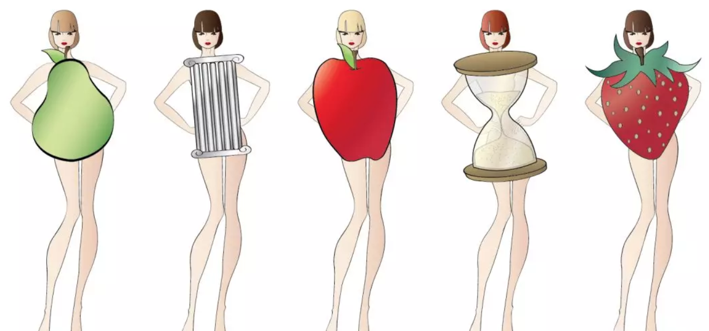

具体到怎样才能更实际的提升自己的衣品，我觉得可以从三个方面入手，自身硬件条件（身材和气质类型）+穿衣逻辑（单品风格和配色etc）+性格特质。 今天就来详细聊一聊这个话题吧。
自身硬件条件
这个很好理解，就是你的长相、身材和肤色，有的女生长相就偏甜美，而有的则看起来更英气，每个人因为自身硬件条件的不同，适合的风格自然也不同。 在硬件条件中，我觉得身材类型对于认识自己适合什么风格的单品来说是最重要的，通常来说女生的身材可以分为五种：

- 梨形身材：体型上小下大，肩窄胸小，腰细臀宽，呈正三角形。
- 矩形身材：肩腰臀几乎等宽，腰线不突出。
- 苹果型身材：体型圆润，上半身胖但下肢较为纤细。
- 沙漏型身材：胸大腰细，体形曲线是明显的S型。
- 草莓型身材：身材呈倒三角形，肩宽、胸部丰满，臀部、腿部较廋。
而人的体型是天生的，健身的确可以让身材线条变得更好，但却并不能改变人的体型。除了完美的沙漏型身材，其他四种身材类型都有它固有的缺点和优势， 这就需要我们通过穿衣来扬长避短了，先找到一个跟自己身材类型差不多的Style Icon，观察她是怎样穿衣的，模仿她的穿衣风格是相对省力的做法儿。
比如了解我的人都知道我很喜欢晚晚的穿搭和气质，自己也会有意无意地仿照她的穿衣风格，因为觉得我们有类似之处。
穿衣逻辑
选对适合自己身材的单品对提升衣品来说，只是入了门。因为穿衣是一件整体性的事儿，重要的还有单品与单品之间的共鸣。 品位乍一听是件感性的事儿，其实它的背后同样需要理性的逻辑。 就像仔细看那些很成功的造型，你会发现她们从头到脚的单品搭配都是很有逻辑的，从选择什么样的发型，到衣服、配饰、鞋子、整体的配色，全都是恰到好处的。
而对于普通人来说，难度就在于，你要成为自己的造型师，你不仅要了解自己，还要去积累一些关于穿衣和配色的逻辑。 这些一开始都可以通过多看街拍来获得，我自己的习惯是存一些好看的街拍，然后去看它背后的逻辑。 在看街拍之后，自然就是多尝试，多犯错了，就像对任何成长来说，自己去结实的摔一跤总是比靠别人教来的快。
在跟美有关的事情上，人们习惯于崇尚运气多过努力，认为好品位是一种天分，可事实是，并没有那么多优势是那么轻松就获得的。 那些现在看起来很有品位的人，她们也并不是生来如此，她们也是通过一点点的进步而变成现在这样子的。 其实就不用跟别人比较，每个人在自己的区间里都有很大的上升空间。
现在的你也许只是6分的自己，但在找到最适合自己的穿衣风格之后，就能成为接近10分的自己，而这个寻找的过程本身就很有意义。
性格特质
什么才是决定个人风格最核心的事儿呢？我觉得不是长相不是身材，甚至也不是穿衣逻辑，而是你是一个怎样的人，是关于你是谁的问题。 就像当一个人的性格和内在发生很大的变化之后，这些转变也会直接体现在她的穿衣风格上，比如Kristen Stewart，在她转变性取向之后，长发变成了短发，穿衣风格也由甜美变成了酷酷的中性风。
拿我来说的话，在读大学以前我都是衣服要妈妈给买，什么都听父母话的乖小孩。但从上大学到工作之后，我发现自己脱离了对于父母的依赖也是个喜欢自由，独立和女权主义的人。 我的穿衣风格也从呆板的学院格子衬衫、乖乖的粉色系变成了现在的莫兰蒂系，喜欢舒服的材质，也喜欢酷酷的小皮衣。
除了审美有提高之外，是因为找到了独立自由的自己的样子，也就是本来的我，想要向外界表达出的自己的样子。
一三一三
2 Dec 2018, 10:20 AM
穿衣逻辑这条非常赞同，很多人注重单品多过注重整体，最后就是”明明我长得那么美身材那么好，怎么穿上跟她一样的单品却逊色很多”的结果了。
回复作者回复
2 Dec 2018, 13:55 PM
对，其实整体的协调性非常重要了，有时候差一点就是差很多。
小鱼儿
2 Dec 2018, 10:20 PM
还想加一点就是适合自己的才重要呢。
我只是一道风景
2 Dec 2018, 11:30 PM
很同意作者说的，从过去的甜美风到简洁风，和自己的成长和思想发生变化有很大关系，我喜欢过去的自己，也喜欢现在的自己。
回复我只是一道风景
2 Dec 2018, 11:55 PM
真的很重要了，对自己清晰的认识是一切的前提。
回复